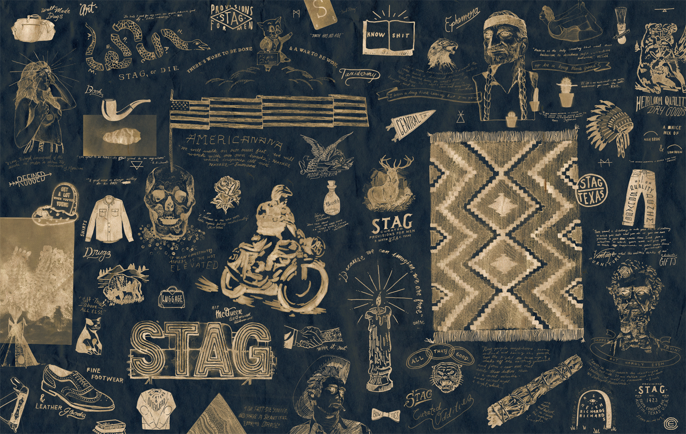
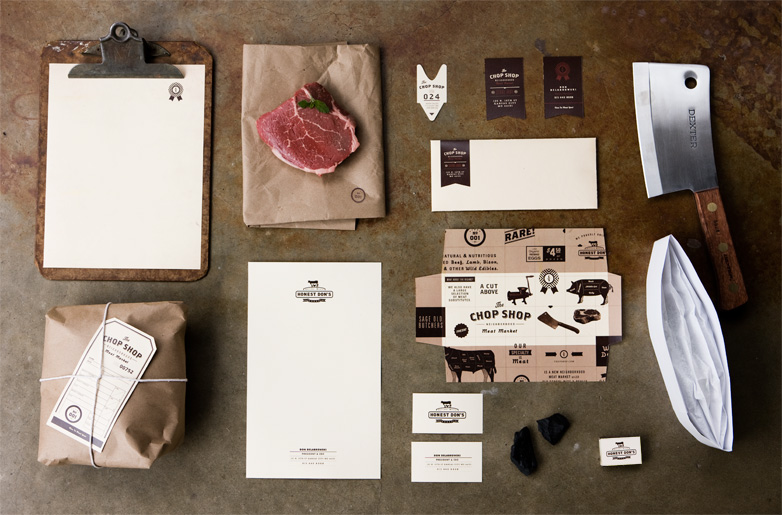
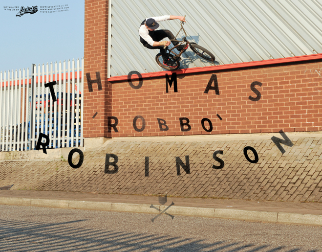
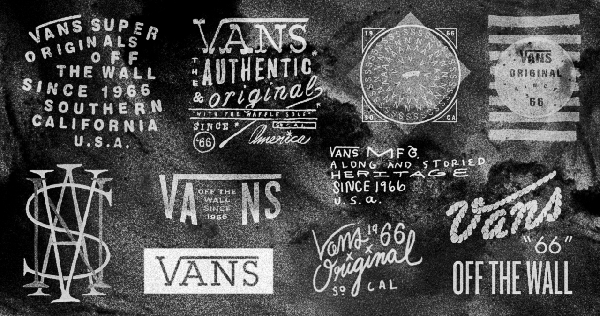
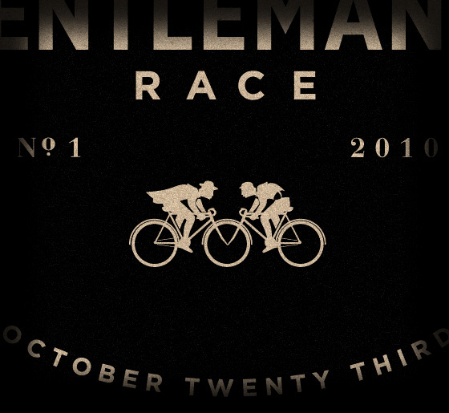
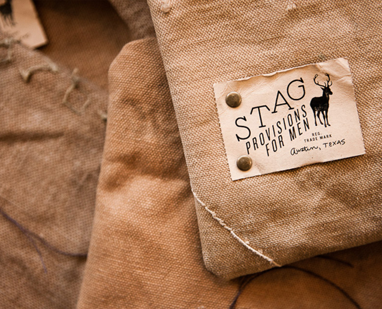

Caleb Owen Everitt
I can’t get enough of this urban, rugged americana design aesthetic. Austin-based visual designer Caleb Owen Everitt nailed it. I’m not sure if he’s still there, but he certainly left his mark on some of PTARMAK’s older project.